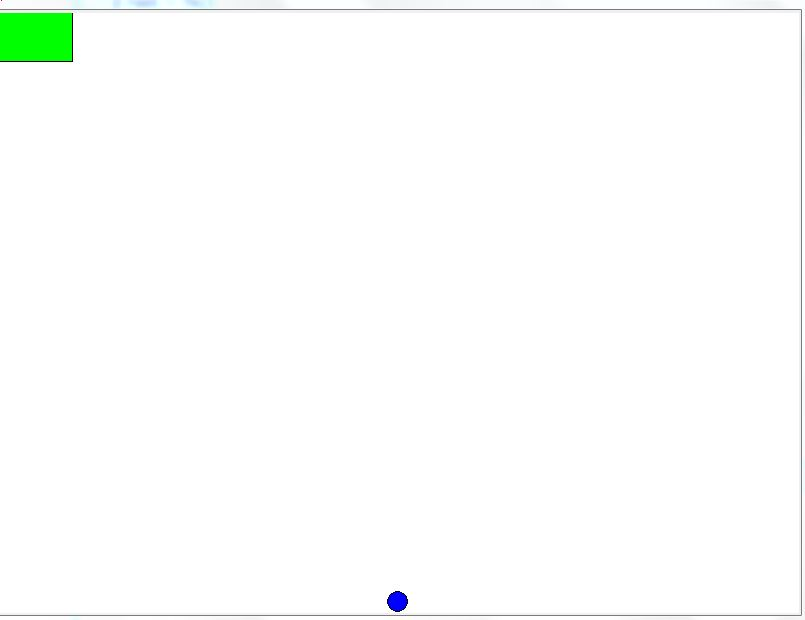
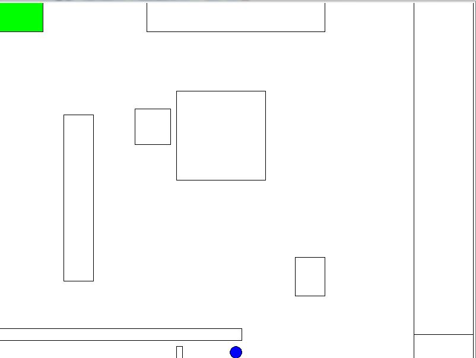
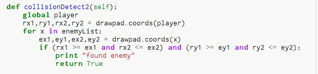

In our project we made a game where there is one player in a empty map with a end green finish The goal of the game is to get the player to navigate around the map until you reach the end point, once you reach the end point you win the game.
While doing this project I learned a few new things about python. The biggest thing that I learned though wasn’t necessarily the new things that I learned but instead it was how to take previously written programs and recycle them into my new program. By doing this for the majority of the program my partner and I were able to making a fully functional game.
In this image you can see how the game looks like when you run it. If you look at the bottom of you screen you can see the player and if you look at the top of the screen you can see the end game location.
In this image you can see the 1.2 version of the game. In this version of the game the map is layed out but the boxes are not fully functional yet
In this snippet of code you can see the part where if the player enters the coordinates of the box they would be teleported back to the spawn. This would probally be the hardest part of coding the game in the fact that we intially had no idea what to do to make this work untill we did further research and figured it out